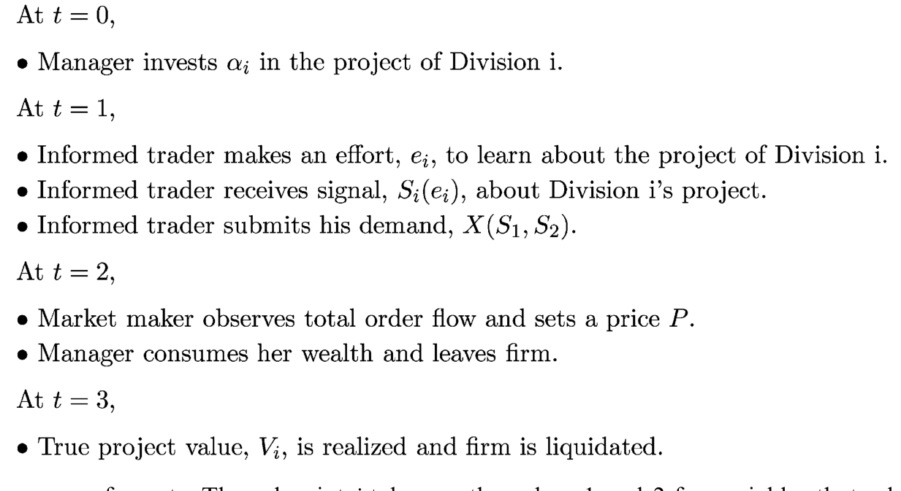
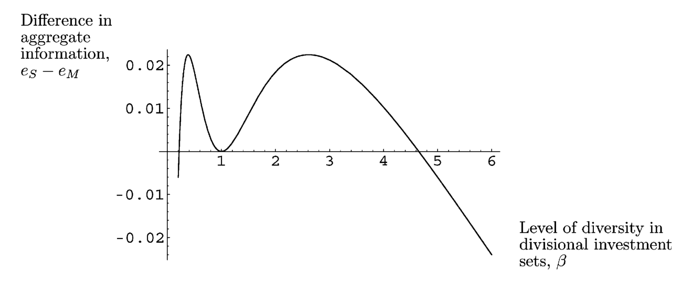
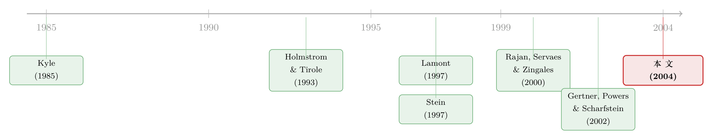

老板不看股价，股价却替他重新分了钱
本文读的是 Goldman (2004, Journal of Financial Economics)：一个领着「按股价发奖金」合同的经理，在一家两业务部的公司里决定往每个部门投多少钱。作者证明——即便两个部门的项目彼此独立、即便公司根本不缺钱——两个部门的投资也会正相关；分拆 (spinoff) 之后，夏普比 (Sharpe ratio) 高的部门会拿到更多钱、低的部门更少；而多业务部公司的价值，会比拆成两家独立公司之和更低，且两个部门的投资机会越「不像」，这个折价越大。所有这些，都来自一条被人忽略的纽带：两个部门，挂在同一个股价底下交易。
1 一个看上去不该存在的相关性
先讲一个经验事实，它困扰了内部资本市场 (internal capital markets) 这条文献很多年。
Lamont (1997) 发现：1986 年油价大跌之后，那些既有油气部门、又有非油气部门的公司，连非油气部门的投资也一起砍了。这奇怪在哪里？油价跌，砍油气部门的投资天经地义；可那些卖塑料、卖化肥的部门，项目本身跟油价八竿子打不着，凭什么也跟着挨饿？
Lamont 给的解释是「外部现金流约束」：油价跌让公司整体现金紧张，于是只好勒紧裤腰带，连好部门也一起省。听上去顺理成章。可惜 Schnure (1997) 紧接着泼了盆冷水——他重新查了 Lamont 那批公司，发现它们根本没有融资约束。钱不缺，那为什么好部门也跟着挨了刀？
这就是本文要解决的张力：两个项目彼此独立、公司又不缺钱，部门投资为什么会一起涨、一起跌？
接着，一个自然的问题是：这种「同涨同跌」，会不会根本不是现金在作怪，而是别的什么东西把两个部门绑在了一起？Goldman 的答案干净得近乎挑衅——绑住它们的，是同一个股价。
2 模型：一个「不看股价、却被股价定义」的经理
要把这条直觉讲透，得先把舞台搭起来。模型有三类人：一个经理、一个知情交易者 (informed trader)、一个被随机流动性冲击驱动的噪声交易者，外加一个零利润的做市商 (market maker)。后三者合起来，就是一套标准的 Kyle (1985) 微观结构。
时间线是这样的（如图 1 所示）：

Figure 1: Sequenceof events. The subscript i takes on the values 1 and 2 for variablesthat relate to the
- t = 0：经理决定往两个部门各投多少钱，记为 \(a_1\)、\(a_2\)。她只知道项目收益的分布参数，而不知道真实收益。
- t = 1：知情交易者看到经理投了多少，然后自己掏钱去研究两个项目的前景，拿到两个信号，下单买卖股票；做市商根据总订单流定价。
- t = 2：经理按这个时点的股价拿到报酬，然后离场。
- t = 3：项目收益兑现，公司清算。
几个关键设定，逐条说清。
项目。 每个部门有一个风险项目 \(i\)，收益
$$V_i \sim N(m_i,\,\sigma_i^2),\qquad i=1,2,$$
两者相互独立。注意这一点——后面那个「正相关」的结论，不是因为项目本身相关，这正是全文最反直觉的地方。
经理。 她是风险厌恶的，效用为常绝对风险厌恶 (constant absolute risk aversion, CARA) 形式
$$U(W) = -\exp(-zW),$$
其中 \(z\) 是风险厌恶系数。因为项目「长寿」、而她任期短（这是 Assumption 2），她等不到 \(V_1\)、\(V_2\) 兑现就走人，所以她的报酬只能挂在 t = 2 的中间股价 \(P\) 上，且是线性的（Assumption 5）：报酬 \(= a_0 + a_1 P\)，并不失一般性地取 \(a_0=0\)、\(a_1=1\)。
这里有个至关重要、又极易被忽略的设定（Assumption 4）：经理不用股价来指导投资。她先投，知情交易者再去研究、把信息打进股价里。也就是说，股价不是经理「学习」的工具，而是她报酬的标尺。她关心股价，不是因为股价告诉了她项目好坏，而是因为股价就是她的工资。
这条假设是本文与 Dow & Gorton (1997)、Holmstrom & Tirole (1993) 那一脉的分水岭。在那些模型里，股价之所以重要，是因为它能引导经理投得更有效率（allocative efficiency）；而本文关掉了这条信息回路——股价在这里纯粹是报酬的载体。正因如此，本文得到的「扭曲」是另一种性质的东西。
知情交易者与信息生产。 这是模型的发动机。交易者花 \(e_i\) 的努力去研究项目 \(i\)，得到信号（Assumption 6）
$$S_i = V_i - m_i + \varepsilon_i\!\left(\frac{1-e_i}{e_i}\right)^{1/2},\qquad \varepsilon_i\sim N(0,\sigma_i^2),$$
努力越多，信号里的噪声越小、信息越精确。而研究是要花钱的（Assumption 7）：
$$\text{cost of producing information about project } i = \tfrac{1}{2}\,c\,e_i^2.$$
关键就在这里：信息生产的多少 \(e_i\) 是内生的。交易者研究哪个部门、研究多深，取决于经理投了多少——经理投得多的部门，在公司里占比大，研究它的交易利润也大，于是交易者会把更多精力投向被重仓的那个部门。
3 核心机制：把两个部门焊在一起的，是股价的方差
现在把链条接起来。
第一步，做市商定价。Lemma 1 给出均衡股价是 Kyle 式的线性形式：
$$P = k_0 + k_1 Y,\qquad Y = x + u,$$
其中 \(Y\) 是知情交易者订单 \(x\) 与噪声订单 \(u\sim N(0,\sigma_u^2)\) 的总和，截距
$$k_0 = a_1 m_1 + a_2 m_2$$
就是两个部门投资的「期望价值」之和，而斜率 \(k_1\) 是价格冲击（Kyle 的 \(\lambda\)），它随市场上生产的信息量上升而上升。
接着，回到经理。CARA 效用 + 正态分布，让她最大化 \(\mathbb{E}\{U(P)\}\) 等价于最大化股价的确定性等价 (certainty equivalent)——一个干净的均值—方差权衡：
这条方程就是全文的心脏。经理面对的不是「这个项目 NPV 是正还是负」，而是「我多投这一块钱，会让我的工资（股价）的均值涨多少、方差涨多少」。
然后，真正关键的一步来了。 股价的方差可以拆成两个部门各自贡献的两块：
$$\sigma^2_{\text{Stock}} = \sigma^2_{\text{Division1}} + \sigma^2_{\text{Division2}}.$$
每一块的大小，取决于市场在那个部门上生产了多少信息——市场学得越多，那一块方差越大。
现在做个思想实验。假设经理决定在部门 1 多投一笔钱。会发生什么？
部门 1 在公司里的占比变大 → 知情交易者把更多精力投向研究部门 1、更少精力研究部门 2 → 市场对部门 2「学得更少」→ \(\sigma^2_{\text{Division2}}\) 下降 → 股价里与部门 2 相关的那块波动变小 → 风险厌恶的经理发现：部门 2 现在「更安全」了 → 于是她也愿意往部门 2 多投一点。
于是反转出现了：两个部门的投资，就这样被焊在了一起——哪怕项目本身毫不相关。多投部门 1，反而降低了部门 2 的（被定价的）风险，从而勾出了对部门 2 的更多投资。这就是第一个结论：
最优的部门 1 投资，与部门 2 项目的期望收益正相关、与部门 2 项目的收益方差负相关。 两家原本独立的公司一旦合并，它们投资之间的相关性会上升——仅仅因为它们如今共用一个股价。
这恰好为 Lamont (1997) 的谜题给了另一种解释：油价跌，不是因为公司缺钱才连累了非油部门，而是因为油部门项目的期望收益下降后，按这套逻辑，最优地也该减少非油部门的投资。钱不缺，照样同跌。
4 分拆：当那条纽带被一刀剪断
既然「同一个股价」是把两个部门绑在一起的绳子，那么剪断这根绳子会发生什么？这就是分拆。
在合并状态下，因为两个部门被那条正向链接绑着，投资会被向中间「池化」(pooled)——夏普比高的部门本该拿更多，可它一多投，就会顺带把钱「拖」给夏普比低的部门；反过来，砍掉差部门的投资，也会顺带砍掉好部门。于是好部门投得不够多、差部门投得不够少，一切都被拉向那个「平均部门」的投资水平。这其实就是文献里说的「公司社会主义 (corporate socialism)」，只不过这里它不是靠现金预算约束逼出来的，而是靠股价方差的联动内生出来的。
一旦分拆，这条链接断了：夏普比低的那个部门，投资会下降；夏普比高的那个部门，投资会上升。换句话说——
分拆把资源从差项目挪向好项目，钱配得更有效率了。
这正好对上了 Gertner, Powers & Scharfstein (2002) 的经验发现：分拆之后，高 Q 部门的投资上升、低 Q 部门的投资下降，而且投资对投资机会变量的敏感度也上升了。本文还额外给出一个吻合的预测：当被拆出去的部门夏普比高于母公司时，它分拆后投资对自身夏普比的敏感度会上升——这同样是 Gertner et al. (2002) 看到的。
（关于「分拆为什么能改善投资」这件事，经验上其实远没有这么干净。一篇用更小心的测量与内生性处理的论文，几乎把这个流行结论整个推翻了，参见《拆分真能让公司投得更聪明吗？》；而把分拆当成治理工具、用来「逼老板坐不住」的另一种理论视角，可参见《拆掉一家公司，是为了让老板坐不住》。Goldman 这篇的独特之处在于：它不靠现金约束、也不靠治理，光凭股价方差就推出了这套结论。）
5 价值：为什么多业务部公司「天生」打折
把最优投资解出来，就能算公司价值了。第三个结论：
多业务部公司的价值，低于两个单部门公司价值之和——也就是经典的「多元化折价 (diversification discount)」。而且，两个部门的投资机会越「不像」（夏普比差距越大），这个折价越大，分拆能创造的价值也越大。
直觉还是那条池化逻辑：两个部门越「不像」，被强行池化的扭曲就越严重，把它们拆开的好处也就越大。所以本文给了一个清楚的截面预测——投资机会越分化的公司，越值得拆。
这里值得停一下：在 Stein (1997) 那套「赢家通吃 (winner picking)」的故事里，内部资本市场是创造价值的（总部把钱从差部门挪到好部门）；而在本文（以及 Rajan, Servaes & Zingales 2000；Scharfstein & Stein 2000）里，内部市场反而毁损价值。更要命的是，Stein 预测部门投资负相关，本文却预测正相关——两者在符号上正面相撞。这正是本文最锋利的地方：它不仅复制了「公司社会主义」，还给出了一个可以用来证伪的相关性符号。
6 顺带的几个微观结构含义
模型还顺手吐出几条挂在微观结构参数上的预测，挺有意思：
- 市场越有流动性，公司在风险项目上的内部投资越少。 这条很微妙——在 Kyle (1985) 里，股价波动率不受噪声交易 \(\sigma_u^2\) 影响；而本文因为信息生产是内生的，流动性会反过来影响波动率，从而影响经理的风险敞口，进而影响投资。
- 经理会相对多投市场认为「越不透明」的项目。 因为信息生产虽然让知情股东赚到交易利润，却也抬高了股价波动、伤害了无法分散公司特质风险的经理。
- 分拆是否会带来更多信息生产，取决于两个部门「像不像」：当且仅当两个部门的投资机会不太分化时，分拆才会带来更多的信息生产。图 3 刻画了分拆前后总信息生产努力之差如何随部门的差异程度变化。

Figure 3: Difference in aggregate effort spent on collecting information about the projects of the two
7 文献脉络
把这篇论文放回它的坐标系里，脉络其实相当清晰。
源头有两支。一支是市场微观结构：Kyle (1985) 给了「知情交易—噪声交易—做市商定价」这台机器，本文整套股价形成就架在它上面。另一支是「股价信息性如何影响经理投资」：Holmstrom & Tirole (1993)、Dow & Gorton (1997) 这些工作问的是，当经理用股价来指导投资时，投资效率如何——但它们清一色研究单部门公司。

主战场是内部资本市场。Lamont (1997) 抛出了「跨部门交叉补贴」的经验谜题，Shin & Stulz (1998) 跟进。理论这边，Stein (1997) 说内部市场靠「赢家通吃」创造价值、且投资负相关；Rajan, Servaes & Zingales (2000) 与 Scharfstein & Stein (2000) 则说内部市场是「公司社会主义」、毁损价值——但它们都建立在现金约束之上，因而预测投资负相关，解释不了 Lamont 那个「不缺钱也同跌」的事实。
本文的位置就卡在这道缝里：它抽掉了现金约束，只留下「同一个股价 + 风险厌恶 + 内生信息生产」，却同时复制了「公司社会主义」、给出了正相关、并预测了分拆后的投资变化——后者正好对上 Gertner, Powers & Scharfstein (2002) 的证据。它把一条原本属于「资产定价/微观结构」的逻辑，搬进了「公司金融/内部市场」的客厅。
（在更广的内部资本市场实证图景里，用分拆来给内部市场「做活体解剖」是一条主线，可参见《拆开来看，钱才流到对的地方》。）
8 评论与延伸（Q&A + 研究方向）
(a) 几个可能的疑问
Q：项目明明独立，投资怎么会正相关？这不是自相矛盾吗？
不矛盾，关键在「相关性的来源」被换了。这里的正相关不来自项目现金流的协方差，而来自股价方差的此消彼长：多投部门 1 → 市场少研究部门 2 → 部门 2 的被定价风险下降 → 风险厌恶的经理多投部门 2。绑住两者的是「同一个股价 + 同一个风险厌恶的经理」，不是项目本身。
Q：这跟 Stein (1997) 的「赢家通吃」到底差在哪？
差在符号和机制。Stein 说内部市场创造价值、部门投资负相关（钱从差部门搬向好部门）；本文说内部市场毁损价值、投资正相关。本文也没有总部「主动调拨」这一步，扭曲完全是经理在均值—方差权衡下自发产生的。两套理论给了相反的可检验符号。
Q：「经理不用股价指导投资」（Assumption 4）这条会不会太强？
作者自己也承认这是为了可解性 (tractability) 而关掉的一条信息回路。他的辩护是：允许经理事后看股价再调仓，多半会改变投资的总水平，但不会改变两个部门投资的相对关系——而相对关系才是本文真正关心的变量。这条辩护合理，但终究是断言，没有在模型里证。
Q：那个「正相关」的实证，怎么和 Lamont 的「同跌」对上？
本文不需要现金约束就能解释 Lamont：油部门项目期望收益 \(m\) 下降时，按均值—方差最优，最优地也该减少非油部门投资。这恰好回应了 Schnure (1997) 那句「这批公司其实不缺钱」——不缺钱也照样同跌。
Q：多元化折价是这套机制独有的预言吗？
折价本身不独有（Rajan et al. 2000、Scharfstein & Stein 2000 都有）。本文更尖锐的是那条比较静态：折价随两个部门夏普比差距单调上升，从而「投资机会越分化的公司越值得拆」。这是一条相对干净、可以拿去截面检验的预测。
Q：CARA + 正态把模型变成均值—方差，是不是丢掉了什么？
丢了高阶矩（偏度、尾部），也丢了财富效应——CARA 让风险厌恶不随财富变化。好处是闭式解、直觉透亮；代价是，若经理的真实激励里有「彩票偏好」或凸性报酬（期权式合同），结论可能松动。本文的线性合同假设本身也排除了期权型激励，这是它和 Carpenter (2000) 那条线的区别。
(b) 几个可能的研究问题与提案
1. 用「债券市场的信息生产」替换「股票市场」，再看部门投资如何联动。 - 【经济故事】本文的纽带是「同一个股价」。可一家多业务部公司往往也发统一的公司债——债权人对各部门的信息生产同样是内生的，且方向（关心下行风险、违约）与股东不同。把发动机从股价方差换成信用利差，部门投资的联动符号是否会反转？ - 【可行性】中。识别上可用「同一发行人、不同部门暴露」的债券利差变化，配合分拆/剥离事件做事件研究；数据用 TRACE + 部门层面的资本开支。难点是把「部门」映射到可观测的债券定价，doable 但需要细致的样本构造。
2. 外资持有人会放大还是削弱这条「股价方差」纽带？ - 【经济故事】本文的机制依赖「知情交易者把精力在两个部门间重新分配」。如果股东结构里有大量信息劣势的外资（或反之，信息优势的本地机构），信息生产的内生再分配会被改变，部门投资的正相关强度也会随之变化。 - 【可行性】中。可借「可投资度 (investability)」开放作为外资准入的外生冲击，看多业务部公司分拆前后投资联动的变化。数据用跨国持股 + 部门资本开支；识别借鉴现成的可投资度自然实验设计。
3. 直接检验「分拆改善投资 ⟺ 部门夏普比差距大」这条截面预测。 - 【经济故事】本文给了一条干净的可检验命题：投资机会越分化的公司，分拆创造的价值越大、投资再配置越明显。 - 【可行性】高。分拆样本可得，部门层面用 segment data 构造夏普比代理（行业回报均值/方差），看分拆收益与「部门间夏普比差距」的截面关系。难点是 segment 数据噪声大、且分拆本身内生——需要工具或匹配来处理选择性。
4. 把「流动性 → 风险投资下降」这条微观结构含义拿去做因果检验。 - 【经济故事】本文预测：股票越有流动性，公司越少投风险项目（因为信息生产内生地改变了经理的风险敞口）。这是一条把二级市场流动性和一级实体投资连起来的暗线。 - 【可行性】中。可用 tick size 改革（如 Tick Size Pilot）作为流动性的外生冲击，看被冲击公司的风险性资本开支变化。识别清楚，但「风险性投资」的度量需要谨慎（R&D 占比、资产 beta 等代理）。
9 我的判断
贡献。 这篇论文最漂亮的地方，是用一个最小的设定撬动了一堆经验事实：不要现金约束、不要总部主动调拨、甚至不要项目之间有任何真实相关，仅凭「两个部门挂在同一个股价下、经理风险厌恶、信息生产内生」，就同时推出了部门投资的正相关、分拆后的资源重配、以及随分化程度递增的多元化折价。它把内部资本市场这条本以「现金」为核心的文献，接上了「股价信息性」这条本属于资产定价的暗线，并且在「投资相关性的符号」上给了一个能跟 Stein (1997) 正面对赌的预测。这是理论该有的样子——少假设、多产出、可证伪。
对识别的担忧。 这是一篇纯理论，所谓「识别」其实是「这套机制能不能被经验数据挑出来」。而它最致命的软肋，是几条结论彼此观测等价：投资正相关、分拆改善投资、多元化折价——Rajan et al. (2000)、Scharfstein & Stein (2000)、Stein (1997) 各自也能产出其中一部分，且往往符号相反或机制不同。要在数据里把「股价方差联动」这条机制从「现金约束」「代理租金」里干净地剥出来，需要的不是更多的相关性，而是一个能直接打到机制上的检验——比如「信息生产的再分配」本身（分拆前后分析师覆盖、知情交易的部门间转移）。此外，Assumption 4（经理不看股价做投资）虽是为可解性而设，却恰恰关掉了与之竞争的「市场反馈」渠道，而后者在经验上未必能忽略（关于经理到底有没有在看价格做决策，参见《老板到底有没有在「看股价」做投资？》）。
后续想看到什么。 我最想看到的，是有人把这条「信息生产在部门间内生再分配」的预测直接拿去实证——用分拆作为冲击，量出分拆前后每个部门的信息环境（分析师数量、知情订单流、价格信息含量）如何此消彼长。如果数据真的显示「重仓部门吸走了信息生产、轻仓部门信息变少」，那本文的发动机才算被验明正身；否则，它就只是又一个能拟合既有事实、却无法与对手区分的优雅故事。
参考文献
- Carpenter, J. (2000). Does option compensation increase managerial risk appetite? Journal of Finance 55, 2311–2330.
- Dow, J., Gorton, G. (1997). Stock market efficiency and economic efficiency: is there a connection? Journal of Finance 52, 1087–1129.
- Gertner, R., Powers, E., Scharfstein, D. (2002). Learning about internal capital markets from corporate spin-offs. Journal of Finance 57, 2479–2506.
- Goldman, E. (2004). The impact of stock market information production on internal resource allocation. Journal of Financial Economics 71(1), 143–167.
- Holmstrom, B., Tirole, J. (1993). Market liquidity and performance monitoring. Journal of Political Economy 101, 678–709.
- Kyle, A. (1985). Continuous auctions and insider trading. Econometrica 53, 1315–1335.
- Lamont, O. (1997). Cash flow and investment: evidence from internal capital markets. Journal of Finance 52, 83–109.
- Rajan, R., Servaes, H., Zingales, L. (2000). The diversification discount and inefficient investments. Journal of Finance 55, 35–80.
- Scharfstein, D., Stein, J. (2000). The dark side of internal capital markets: segmental rent seeking and inefficient investments. Journal of Finance 55, 2537–2564.
- Schnure, C. (1997). Internal capital markets and investments: do the cash flow constraints really bind? Unpublished working paper, Federal Reserve Bank.
- Shin, H., Stulz, R. (1998). Are internal capital markets efficient? Quarterly Journal of Economics 113, 531–552.
- Stein, J. (1997). Internal capital markets and the competition for corporate resources. Journal of Finance 52, 111–133.